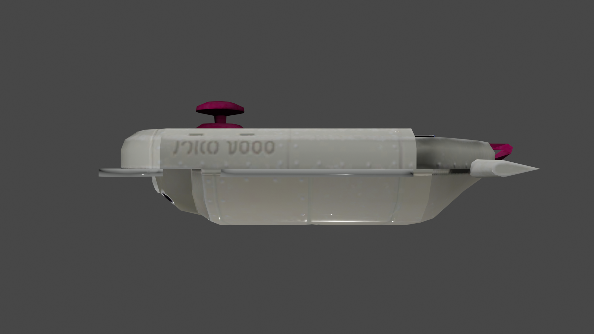

CQ-80 Terminal (NAMACO端末) Replica
Custom CQ-80 terminal replica! Not only is it 100% accurate, I also added Bluetooth music playback control feature. The shell is 3d printed, and the electronics are made of off-the-shelf parts.
This repository contains all the source files for the 3d model, PCB board design, etc. For a guide on making your own replica, visit: DIY Guide for CQ-80 Replica.
Figure 1: Top view. The actual color is more grey than in the photo.

Figure 2: The original.

Figure 3: 8, my beloved…
Figure 4: Font of the terminal.
Figure 5: Compare to the in-game model.
Figure 6: There are three lights in the front: one head light and two smaller side lights. The head light can be used as bathroom flashlight, and the off-white side lights can be used as night lights.
Figure 7: The head lamp is the charging indicator.
Figure 8: Bottom view, the USB port is the charging port.
Figure 9: Compare to the in-game model. It has the charging port in the exact same spot.
Figure 10: The signal light lights up when you tilt the joystick.
Figure 11: Side emboss.

Figure 12: Compare to the in-game model.
Figure 13: The tail, you can see the card slot.
Figure 14: A close up of the joystick.
Here is a demo of the playback control. The controls are
| Press & hold | Bluetooth pairing |
| Press | On/Off |
| Tilt up | Switch head lights |
| Tilt down | Play/Pause |
| Tile left/right | Skip forward/backward |
| Rotate | Volume up/down |